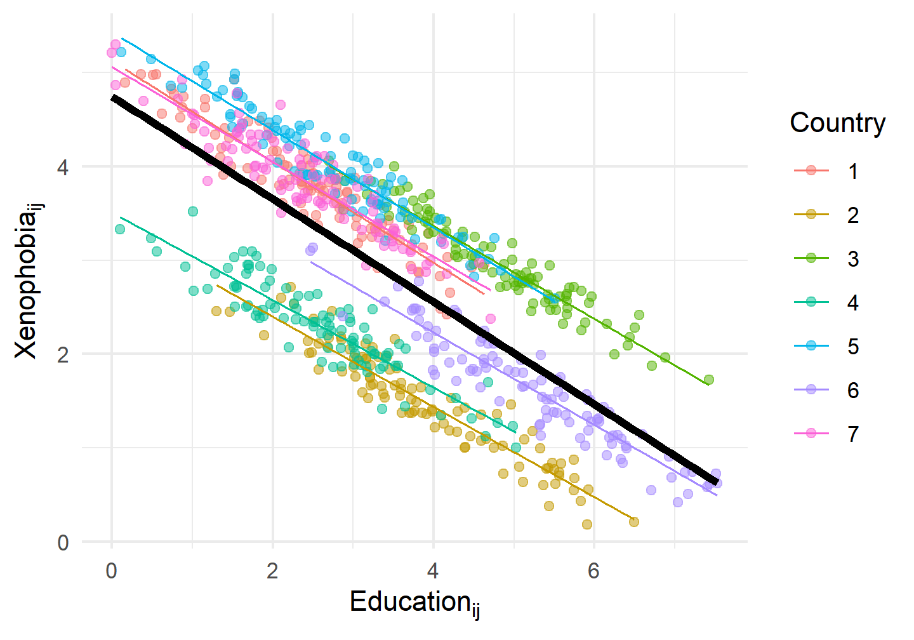
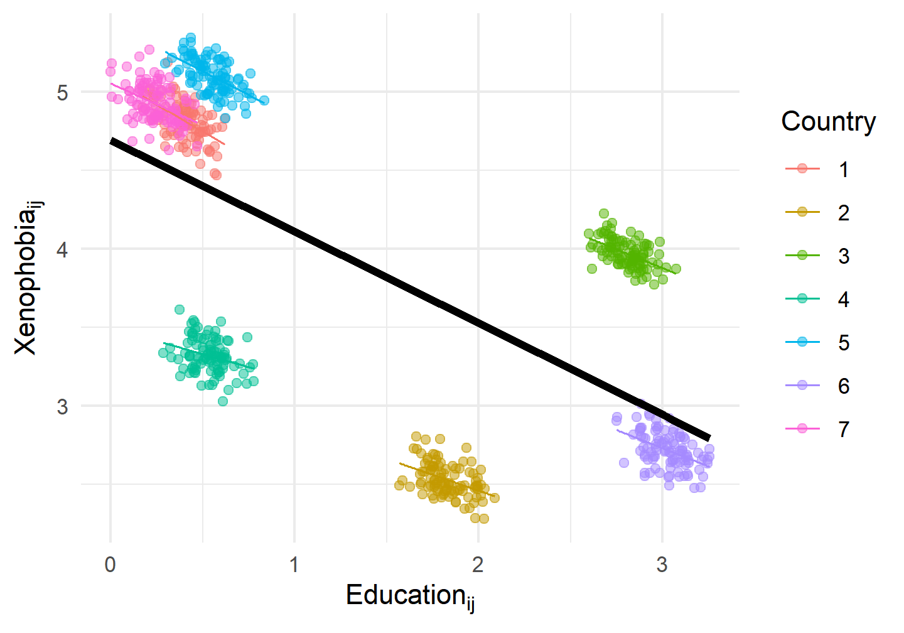
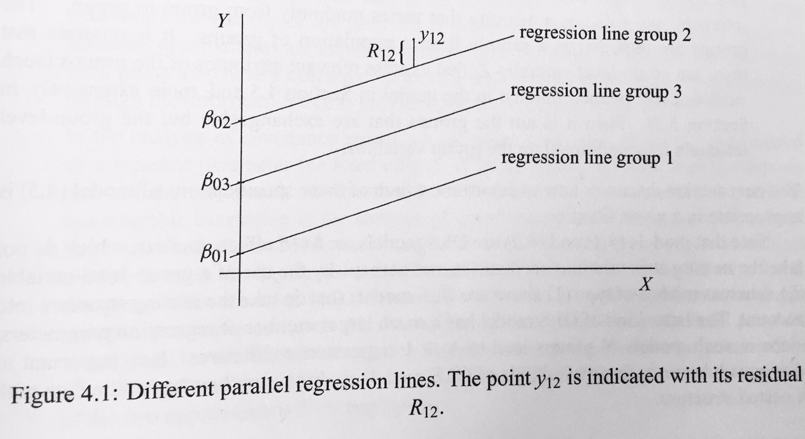
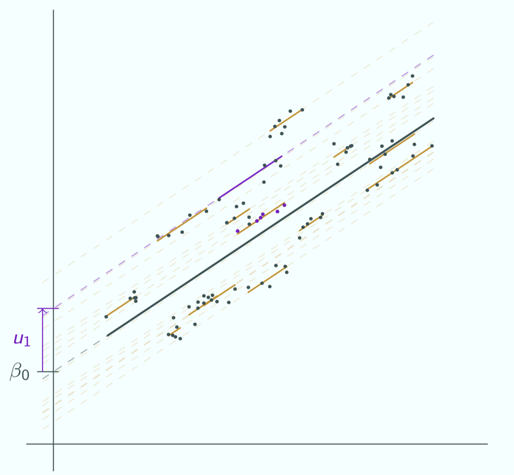
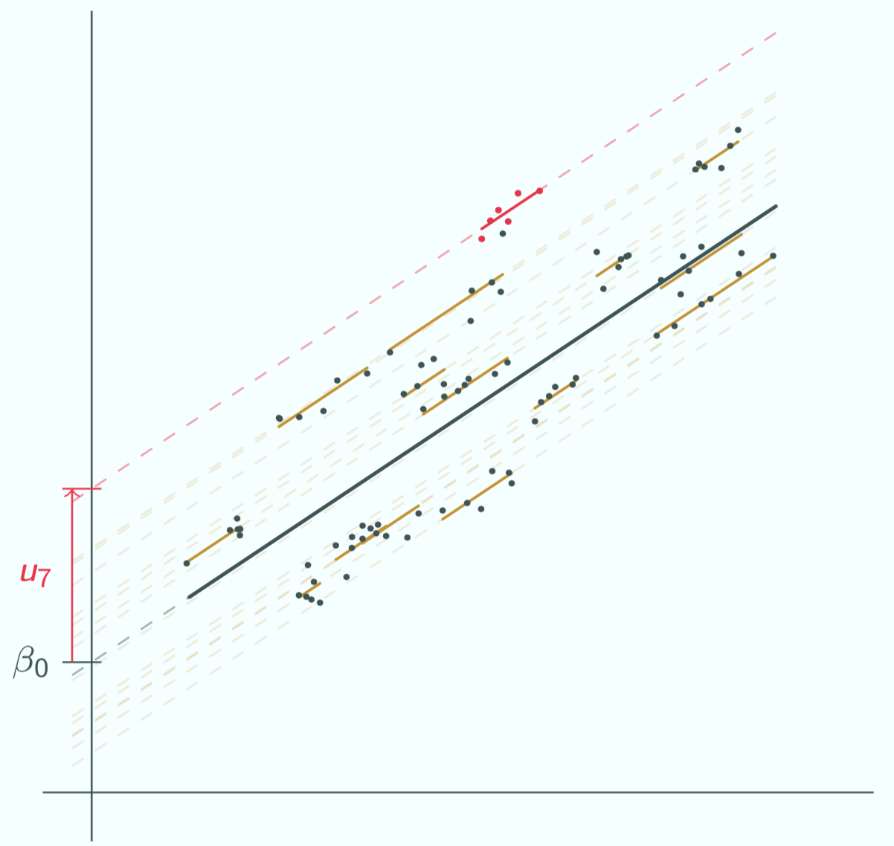

Mixed Effects Multilevel Models
But that would be wrong!
One of the critical OLS assumptions is the independence of errors, after all predictors \(x_{ij}\) have been taken into account:
\[\text{Cov}(\epsilon_{i}, \epsilon_{i'} | x_{ij}) = 0\] Breaching this assumptions does not bias \(\beta\) estimates. But it renders them less precise and statistical inference as overoptimistic (i.e., standard errors, confidence intervals, and p-values will be too small, and t-values too large).
In this simulated example, it is easily visible that the errors of respondents belonging to the same cluster \(j\) are correlated: \(\text{Cov}(\epsilon_{ij}, \epsilon_{i'j}|x_{ij}) \neq 0\). In consequence, the conventional OLS standard error will be too small, by a factor of:
\[\tau \simeq 1 + \rho_{x}\rho_{u}(\bar{N_{g}}-1),\] ::: {.note} where \(\rho_{u}\) is the within-cluster error correlation, \(\rho_{x}\) is the within-cluster correlation of predictor \(x\), and \(\bar{N_{g}}\) is the number of observations per cluster (Cameron and Miller 2015).
This means, statistical inference will be increasingly overoptimistic:
Consider our Manifesto variables: They are country-level characteristics and do not very-within out clusters at all; thus they should be badly affected.

:::
In this simulated example, it is easily visible that the errors of respondents belonging to the same cluster \(j\) are correlated: \(\text{Cov}(\epsilon_{ij}, \epsilon_{i'j}|x_{ij}) \neq 0\). In consequence, the conventional OLS standard error will be too small, by a factor of:
\[\tau \simeq 1 + \rho_{x}\rho_{u}(\bar{N_{g}}-1),\] ::: {.note} where \(\rho_{u}\) is the within-cluster error correlation, \(\rho_{x}\) is the within-cluster correlation of predictor \(x\), and \(\bar{N_{g}}\) is the number of observations per cluster (Cameron and Miller 2015).
This means, statistical inference will be increasingly overoptimistic:
Consider our Manifesto variables: They are country-level characteristics and do not very-within out clusters at all; thus they should be badly affected.

Is this an analysis of 700 random individuals, or rather of 7 countries?
:::
Micro-level model
We start with a micro-level model, which acknowledges that the intercept varies by cluster:
\[Y_{ij} = \beta_{0 \color{red}{j}} + \beta_{1} x_{1ij} + R_{ij}.\] ::: {.note} - \(\beta_{0j}\) are cluster-differences in the average level of the outcome, adjusted for composition effects of the micro-level predictor(s) \(x_{1ij}\). - \(x_{1ij}\) is any micro-level predictor along with it’s slope coefficient \(\beta_{1}\). \(\beta_{1}\) has no subscript \(j\), which indicates that \(\beta_{1}\) is fixed across clusters. - \(R_{ij}\) are common random unexplained residuals, with \(R_{ij} = \mathcal{N}(0,\sigma^2)\).

Source: (Snijders and Bosker 2012, 45)
:::
Micro-level model
We start with a micro-level model, which acknowledges that the intercept varies by cluster:
\[Y_{ij} = \beta_{0 \color{red}{j}} + \beta_{1} x_{1ij} + R_{ij}.\] ::: {.note} - \(\beta_{0j}\) are cluster-differences in the average level of the outcome, adjusted for composition effects of the micro-level predictor(s) \(x_{1ij}\). - \(x_{1ij}\) is any micro-level predictor along with it’s slope coefficient \(\beta_{1}\). \(\beta_{1}\) has no subscript \(j\), which indicates that \(\beta_{1}\) is fixed across clusters. - \(R_{ij}\) are common random unexplained residuals, with \(R_{ij} = \mathcal{N}(0,\sigma^2)\).
:::
Micro-level model
We start with a micro-level model, which acknowledges that the intercept varies by cluster:
\[Y_{ij} = \beta_{0 \color{red}{j}} + \beta_{1} x_{1ij} + R_{ij}.\]
Macro-level model
We continue with a macro-level model that takes the varying intercepts as outcome variable:
\[\beta_{0 \color{red}{j}} = \gamma_{0} + \gamma_{1} z_{1j} + U_{j}.\] ::: {.note} - \(\gamma_{0}\) is the overall mean intercept. - \(z_{1j}\) is a macro-level predictor along with its slope coefficient \(\gamma_{01}\). - \(U_{j}\) are random unexplained group residuals, with \(U_{j} = \mathcal{N}(0,\tau_{0}^2)\). That is, the cluster-specific deviations from \(\gamma_{0}\).
:::
Random intercept model
\[Y_{ij} = \underbrace{\gamma_{00} + \gamma_{01} z_{1j} + \gamma_{10} x_{1ij}}_{\text{Fixed part}} + \underbrace{U_{0j} + R_{ij}}_{\text{Random part}}.\]
Random intercept model
\[Y_{ij} = \underbrace{\gamma_{00} + \gamma_{01} z_{1j} + \gamma_{10} x_{1ij}}_{\text{Fixed part}} + \underbrace{U_{0j} + R_{ij}}_{\text{Random part}}.\]

Random intercept model
\[Y_{ij} = \underbrace{\gamma_{00} + \gamma_{01} z_{1j} + \gamma_{10} x_{1ij}}_{\text{Fixed part}} + \underbrace{U_{0j} + R_{ij}}_{\text{Random part}}.\]

Coefplots and predictions (see below) work just the same as for common OLS and logistic regression.
The upper-level equation is a simple linear model, but its outcome is \(\text{logit}(\alpha_{j})\)!
\[\begin{align*} y_{ij} &= \frac{1}{1 + e^{-(\beta_{0j} + \beta x_{ij})}}, \\ \beta_{0j} &= \gamma_{00} + \gamma_{01} z_{j} + U_{j}, \\ y_{ij} &= \frac{1}{1 + e^{-(\gamma_{00} + \gamma_{01} z_{j} + \gamma_{10} x_{ij} + U_{j})}}. \end{align*}\]
lmer(): Estimate linear mixed effects (multilevel) regression models.glmer(): Estimate generalized (non-)linear mixed effects (multilevel) regression models for binary, count, or other categorical data.